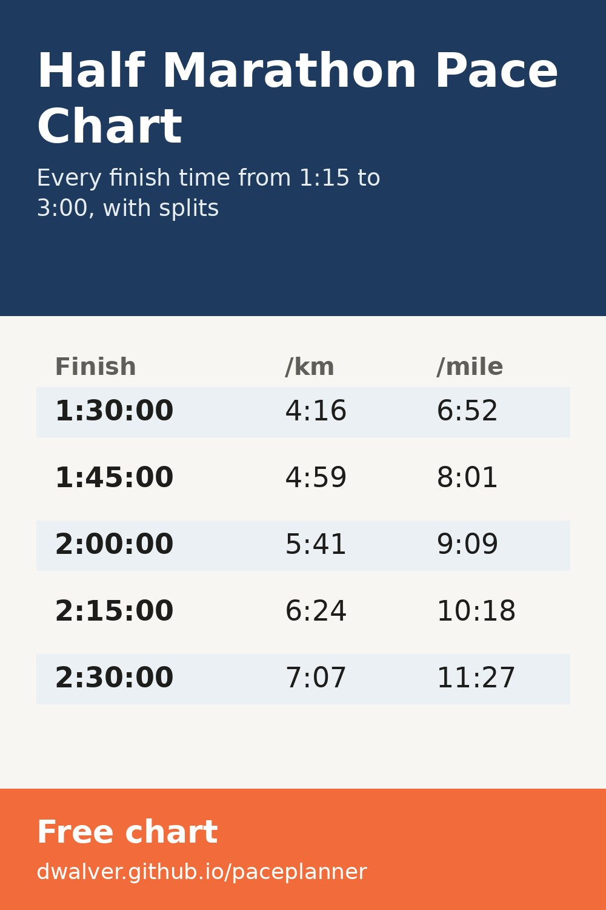

Half marathon pace chart (1:15:00 to 3:00:00)
This half marathon pace chart lists the pace per kilometre and per mile for every finish time from 1:15 to 3:00, plus the 5 km, 10 km and 15 km split times to check during the race. Times are for even pacing over 21.0975 km (13.11 miles). For a time between two rows, use the pace calculator.
| Finish time | Pace /km | Pace /mile | km/h | 5 km split | 10 km split | 15 km split |
|---|---|---|---|---|---|---|
| 1:15:00 | 3:33 | 5:43 | 16.9 | 17:46 | 35:33 | 53:19 |
| 1:20:00 | 3:48 | 6:06 | 15.8 | 18:58 | 37:55 | 56:53 |
| 1:25:00 | 4:02 | 6:29 | 14.9 | 20:09 | 40:17 | 1:00:26 |
| 1:30:00 | 4:16 | 6:52 | 14.1 | 21:20 | 42:40 | 1:03:59 |
| 1:35:00 | 4:30 | 7:15 | 13.3 | 22:31 | 45:02 | 1:07:33 |
| 1:40:00 | 4:44 | 7:38 | 12.7 | 23:42 | 47:24 | 1:11:06 |
| 1:45:00 | 4:59 | 8:01 | 12.1 | 24:53 | 49:46 | 1:14:39 |
| 1:50:00 | 5:13 | 8:23 | 11.5 | 26:04 | 52:08 | 1:18:12 |
| 1:55:00 | 5:27 | 8:46 | 11.0 | 27:15 | 54:31 | 1:21:46 |
| 2:00:00 | 5:41 | 9:09 | 10.5 | 28:26 | 56:53 | 1:25:19 |
| 2:05:00 | 5:55 | 9:32 | 10.1 | 29:37 | 59:15 | 1:28:52 |
| 2:10:00 | 6:10 | 9:55 | 9.7 | 30:49 | 1:01:37 | 1:32:26 |
| 2:15:00 | 6:24 | 10:18 | 9.4 | 32:00 | 1:03:59 | 1:35:59 |
| 2:20:00 | 6:38 | 10:41 | 9.0 | 33:11 | 1:06:22 | 1:39:32 |
| 2:25:00 | 6:52 | 11:04 | 8.7 | 34:22 | 1:08:44 | 1:43:06 |
| 2:30:00 | 7:07 | 11:27 | 8.4 | 35:33 | 1:11:06 | 1:46:39 |
| 2:35:00 | 7:21 | 11:49 | 8.2 | 36:44 | 1:13:28 | 1:50:12 |
| 2:40:00 | 7:35 | 12:12 | 7.9 | 37:55 | 1:15:50 | 1:53:45 |
| 2:45:00 | 7:49 | 12:35 | 7.7 | 39:06 | 1:18:12 | 1:57:19 |
| 2:50:00 | 8:03 | 12:58 | 7.4 | 40:17 | 1:20:35 | 2:00:52 |
| 2:55:00 | 8:18 | 13:21 | 7.2 | 41:28 | 1:22:57 | 2:04:25 |
| 3:00:00 | 8:32 | 13:44 | 7.0 | 42:40 | 1:25:19 | 2:07:59 |
Turn your goal time into a training plan
The free PacePlanner generator builds a 12-week half marathon plan from your race date and goal time, with the target pace for every run. Prefer a spreadsheet you keep? The Half marathon plan on Etsy fills in your dates and paces automatically in Excel or Google Sheets.
Build my free half marathon planHalf marathon spreadsheet planBeginner half planCommon questions
What pace is a 2 hour half marathon?
A 2:00:00 half marathon is 5:41 per kilometre or 9:09 per mile. You should pass 10 km in about 56:53.
What is a good half marathon time?
Breaking two hours is the most popular half marathon goal. Around 1:45 is a strong recreational time, and sub-1:30 (4:16/km) is a competitive club-level result.
How long should I train for a half marathon?
About 12 weeks if you can already run 30 to 45 minutes comfortably. Build your long run gradually to around 18 to 20 km.
See also: 5K pace chart · 10K pace chart · Marathon pace chart.
Save this chart for later:
